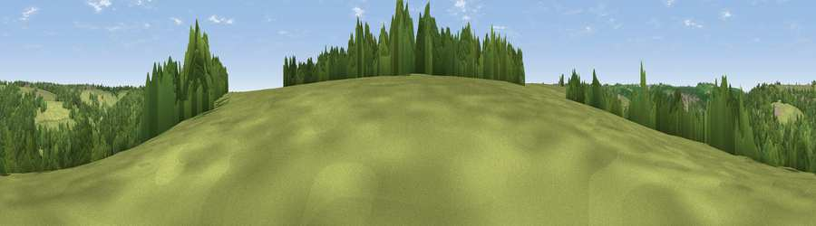

Viewpoint near Nailsworth
#44931 in England · top 94% of its area beats it · near NailsworthThe view, rendered

A 360° render of this exact spot computed from the terrain model, tree cover and land cover — summer colours, afternoon light, calibrated against photographs of famous viewpoints. Real trees, hedges and buildings will differ in detail.
The panorama
Grey silhouette: terrain skyline in each direction (720 bearings, Earth curvature and refraction included). Dashed green: skyline with trees (+15 m) and buildings (+8 m) as obstacles. Blue strip: how far the ground is visible on each bearing.
Where the view opens
Wedge length = distance to the farthest visible ground on that bearing (vegetation-aware). Rings at 10, 25 and 50 km.
What fills the view
69% woodland · 26% grassland · 4% built-up · 1% cropland
Angular shares of the visible panorama (visual magnitude), not map area. Landscape diversity 0.34 (0–1 Shannon).
Key numbers
More beautiful places nearby
The staircase of upgrades: each row has a higher view potential than everything closer. Driving times are estimates from straight-line distance, calibrated against real road routing — check an actual route before setting out.
| Place | Direction | Drive | Score |
|---|---|---|---|
| Viewpoint near Amberley | NNW · 2 km | ~6 min | 45.9 |
| Viewpoint near Thrupp | N · 5 km | ~11 min | 48.5 |
| Viewpoint near Owlpen | WSW · 5 km | ~12 min | 57.9 |
| Viewpoint near Selsley | NW · 5 km | ~12 min | 73.5 |
| Viewpoint near Nympsfield | WNW · 7 km | ~14 min | 74.9 |
| Viewpoint near Nympsfield | WNW · 7 km | ~15 min | 77.5 |
| Viewpoint near Stinchcombe | W · 12 km | ~23 min | 79.4 |
| Viewpoint near Stinchcombe | W · 12 km | ~23 min | 80.5 |
51.68800, -2.20428 · source: screening · position refined by local search. Computed location — check access rights before visiting.